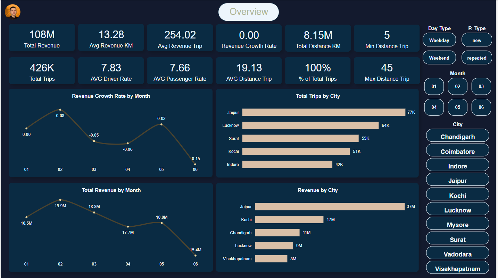
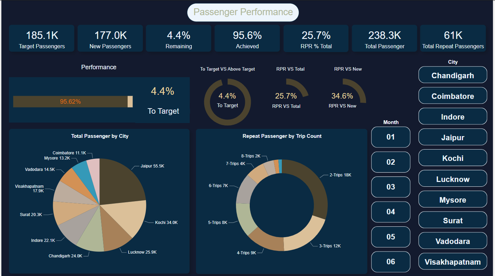
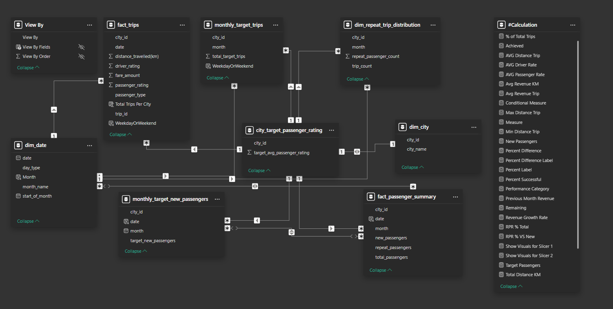

About
Goodcabs, a cab service company established two years ago, has gained a strong foothold in the Indian market by focusing on tier-2 cities. Unlike other cab service providers, Goodcabs is committed to supporting local drivers, helping them make a sustainable living in their hometowns while ensuring excellent service to passengers. With operations in ten tier-2 cities across India, Goodcabs has set ambitious performance targets for 2024 to drive growth and improve passenger satisfaction. As part of this initiative, the Goodcabs management team aims to assess the company's performance across key metrics, including trip volume, passenger satisfaction, repeat passenger rate, trip distribution, and the balance between new and repeat passengers.
Introduction
In this project we used PowerBI Power Query for data Preprocessing and Transforamtion and Power BI for visualization.
Throughout this challenge, we will identify some interesting questions within a dataset.
Dashboard
  Key Insights
City InsightsIdentified Jaipur as the top revenue generator 37M, driven by high AVG revenue per trip 483.92 and strong repeat passenger rate 17.4%. Highlighted growth opportunities in underperforming cities like Coimbatore and Vadodara
Passenger Analysis
Revealed high weekday demand in cities like Lucknow and Surat, reflecting commuter heavy demographics. Mapped repeat passenger trends, with Kochi and Jaipur leading in loyalty but the potential for improvement in cities like Mysore.
Date Insights
Revealed high weekend revenue with 61M, the best month performance is April with 6.5% above target, and February withb 20M.